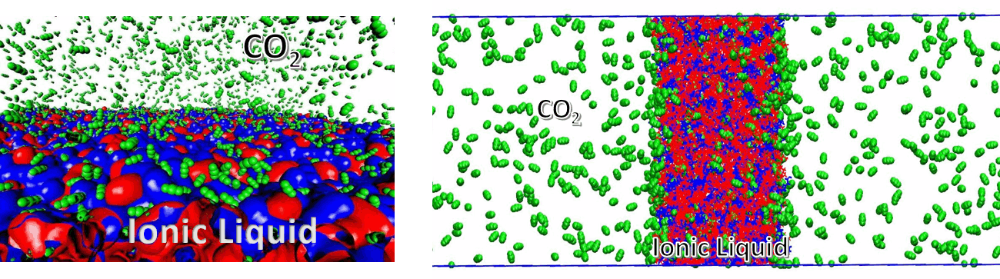

The broad goals of our projects is to use quantum chemistry calculations and MD/AIMD simulations to examine CO2 capture in ionic liquids and salts, certain organic compounds and biological systems such as peptides. In our initial work in this area, we used MD simulations to examine the amount of CO2 absorption in phosphonium lysinate ionic liquids to explain the experimental absorption data. The simulations provide insights on the timescales associated with various processes of CO2 absorption. Additionally, the mobility of CO2/absorbent molecules, pair correlation functions and non-bonded interactions also provide an understanding of multiple-site cooperative nature of CO2 capture (Venkatnathan and coworkers. RSC Adv., 2016, 6, 55438-55443). In our subsequent projects, we used quantum chemistry calculations to extract the distribution of products formed upon interaction of CO2-lysinate anion and CO2-water-lysinate anion (Venkatnathan and coworkers J. Phys. Chem. C 2018, 122, 12647–12656) . Recently, we examined the possible reaction conditions for CO2-dihydrooxazole reactions and relative stabilities from DFT calculations (Venkatnathan and coworkers. Comp. Theo. Chem, 2021, 1206, 113472).